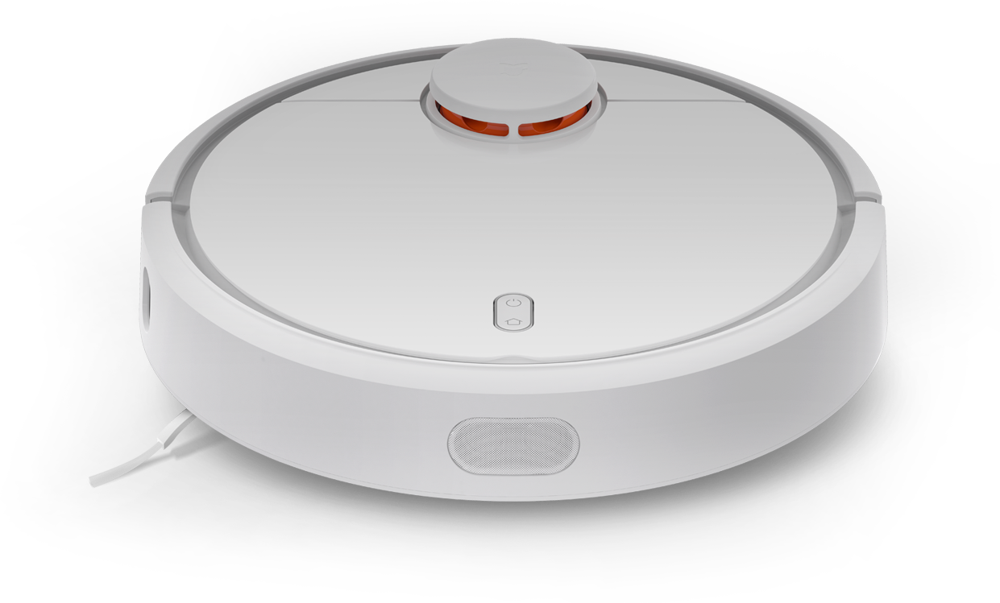

Robot Vacum
- Master Limboy Sihombing
- Reyhan Mahardhika
- Anggih Triyogi Manurung
- Yansen Marolop Tua Hutabarat
Gambar Robot Vacuum
Apa itu Robot Vacuum?
Robot Vacuum (robovac), adalah sebuah pembersih vakum robot otonom yang memiliki pemprograman buatan dan sistem pembersih vakum terbatas.
Robovac pertama ditemukan pada 1990 oleh Isaac M. Dizon. Rancangannya meliputi operasi manual melalui remote control dan sebuah mode "bergerak sendiri" yang membolehkan mesin tersebut untuk membersihkan secara otomatis tanpa kontrol manusia.
Cara Kerja Robot Vacuum?
Komponen Robot Vacuum
Keunggulan Robot Vacuum
-
Lebih dari sekedar pintar
LDS & beragam sensor
Pembuatan peta, perencanaan jalur
Secara otomatis kembali ke dock pengisian daya
Melanjutkan pembersihan dari sesi sebelumnya

-
Bertenaga
Kipas bertenaga tinggi
Sikat utama mengambang
Sikat samping berkecepatan dinamis
Maks 10mm celah pembersih dinding

-
Fungsional
Desain minimalis | Baterai 5200mAh
Dikendalikan dengan ponsel | Peta pembersihan waktu-nyata
Robot Vacuum
Dimensi pada Robot Vacuum

Dimensi pada Robot Vacuum

new Slide
Slide terbaru
Syntax Highlighting
Powered by Lea Verou's Prism
(function() {
function hanoi(n, a, b, c) {
return n ? hanoi(n - 1, a, c, b)
.concat([[a, b]])
.concat(hanoi(n - 1, c, b, a)) : [];
}
return hanoi(3, 'left', 'right', 'mid')
.map(function(d) {
return d[0] + ' -> ' + d[1];
});
})();Named Route
Powered by bespoke-hash
Look up! This route has been named with a data-bespoke-hash attribute.
Just the beginning…
- Edit HTML markup in src/index.html
- Edit Stylus styles in src/styles/user.styl
- Edit JavaScript in src/scripts/main.js
- Enjoy! :) -@markdalgleish